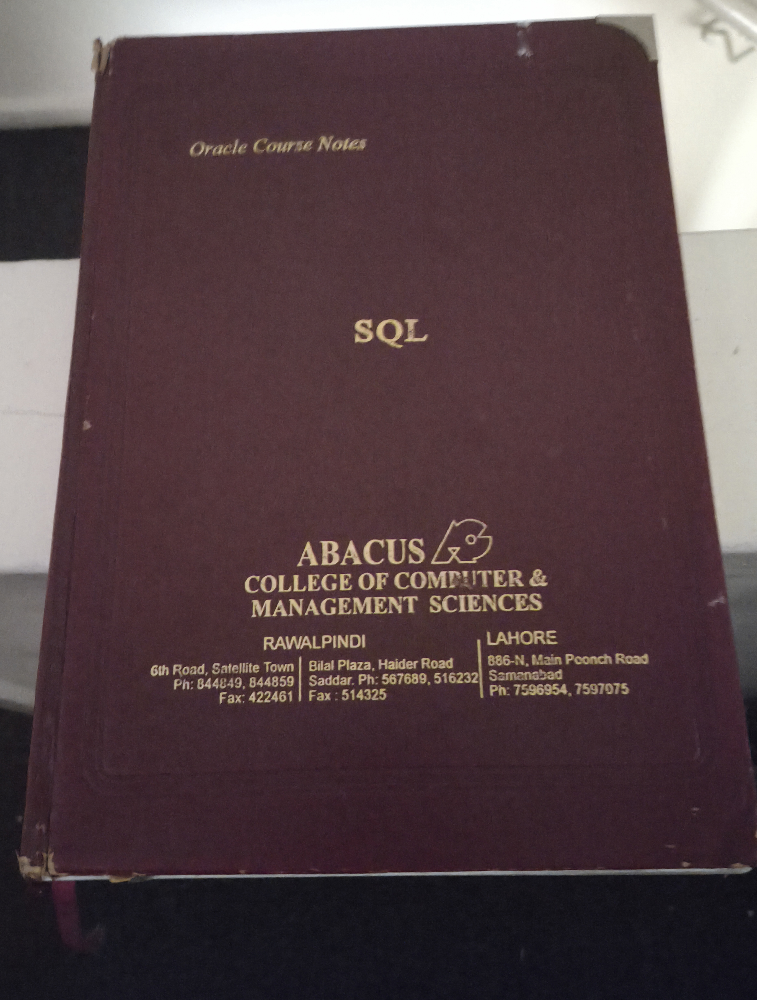

I started my tech journey in (now closed) Abacus College, 6th Road, Satellite Town,Rawalpindi in Pakistan,fast forward later I am in Oracle working on databases and servers, I have a very rare,possibly thousands of pounds worth of a Oracle Course Notes SQL book from the college.

Fast forward later in 2001 im in the UK with my beautiful wife.